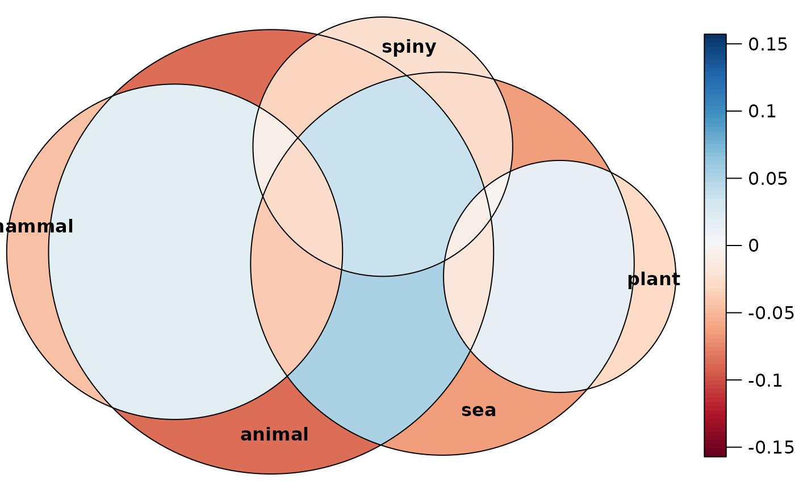

This is a diagnostic tool for evaluating the fit from a call
to euler() visually. A color key is provided by default, which
represents the chosen error metric so that one can easily detect
which areas in the diagram to be skeptical about.
error_plot(
x,
type = c("regionError", "residuals"),
quantities = TRUE,
pal = NULL,
...
)an object of class euler, typically the result of
a call to euler().
error metric. 'regionError' is the difference in
percentage points from the input
whether to draw the error metric on the plot
color palette for the fills in the legend
arguments passed down to plot.euler(). Currently,
providing fills, legend, or strips are not allowed and
will return a warning.
Returns an object of class eulergram, which will be
plotted on the device in the same manner as objects from
plot.euler(). See plot.eulergram() for details.
Notice that this function is purely provided for diagnostic reasons
and does not come with the same kind of customization that
plot.euler() provides: the color legend can only be customized
in regards to its color palette and another key (instead of labels)
is completely turned off.
error_plot(euler(organisms), quantities = FALSE)
